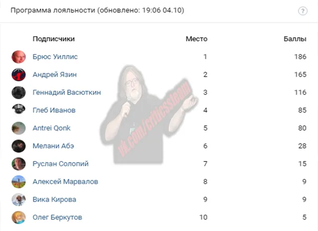

Итоги лояльности
ВКонтакте
🔥Пост еще не появился, но все уже знают, кого мы снова благодарим,
4 октября 2020 · №561 в выгрузке стены · оригинал во ВКонтакте ↗


#ИтогиЛояльности@criticssteam #14
🔥Пост еще не появился, но все уже знают, кого мы снова благодарим,
Выражаем огромное спасибо [id347679904|Андрею Язину] за нереально огромный донат в 2.000₽, благодаря тебе, мы те, кто мы есть, а с каждым днём становимся только лучше.
=====================
🎼Итоги программы лояльности у нас следующие:
🏅[id491132613|Брюс Уиллис]
🏅[id347679904|Андрей Язин]
🏅[id605281782|Геннадий Васюткин]
Ниже, как всегда, ТОП-10 по активности за неделю.
==============
😇Всем блага< Within Temptation - enter
🔥Пост еще не появился, но все уже знают, кого мы снова благодарим,
Выражаем огромное спасибо [id347679904|Андрею Язину] за нереально огромный донат в 2.000₽, благодаря тебе, мы те, кто мы есть, а с каждым днём становимся только лучше.
=====================
🎼Итоги программы лояльности у нас следующие:
🏅[id491132613|Брюс Уиллис]
🏅[id347679904|Андрей Язин]
🏅[id605281782|Геннадий Васюткин]
Ниже, как всегда, ТОП-10 по активности за неделю.
==============
😇Всем блага< Within Temptation - enter